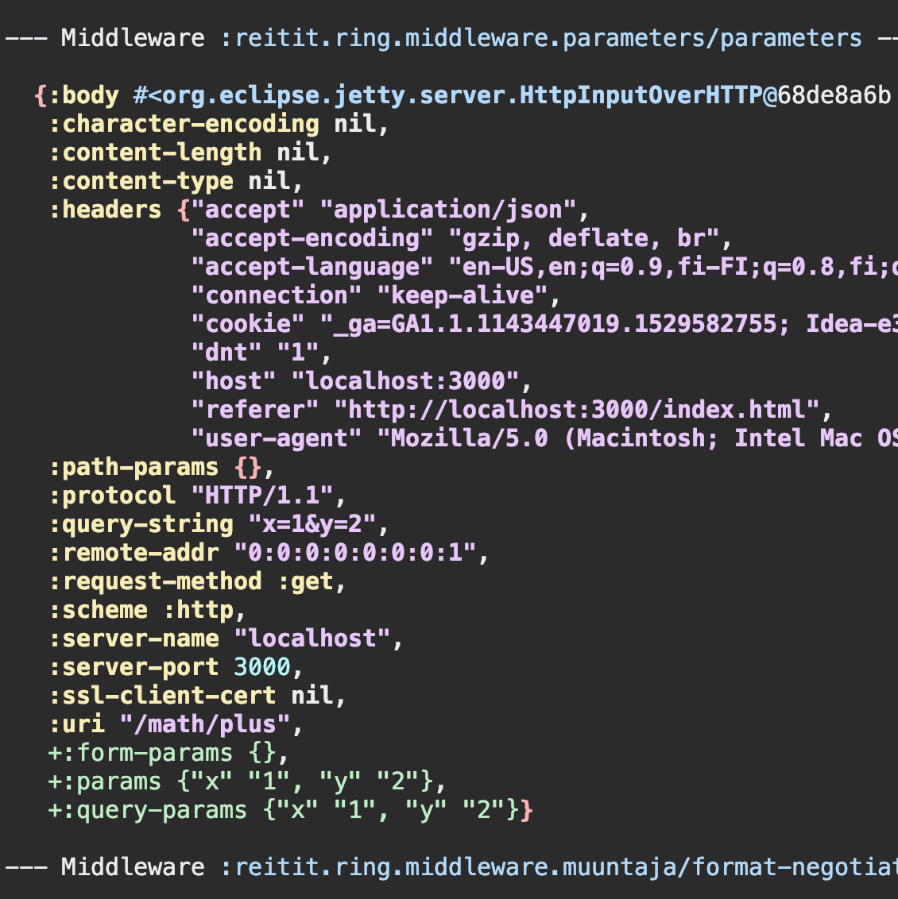

Default Middleware
[metosin/reitit-middleware "0.3.10"]
Any Ring middleware can be used with reitit-ring, but using data-driven middleware is preferred as they are easier to manage and in many cases, yield better performance. reitit-middleware contains a set of common ring middleware, lifted into data-driven middleware.
- Parameter Handling
- Exception Handling
- Content Negotiation
- Multipart Request Handling
- Inspecting Middleware Chain
Parameters Handling
reitit.ring.middleware.parameters/parameters-middleware to capture query- and form-params. Wraps
ring.middleware.params/wrap-params.
NOTE: will be factored into two parts: a query-parameters middleware and a Muuntaja format responsible for the the application/x-www-form-urlencoded body format.
Exception Handling
See Exception Handling with Ring.
Content Negotiation
Wrapper for Muuntaja middleware for content-negotiation, request decoding and response encoding. Takes explicit configuration via :muuntaja key in route data. Emit's swagger :produces and :consumes definitions automatically based on the Muuntaja configuration.
Negotiates a request body based on Content-Type header and response body based on Accept, Accept-Charset headers. Publishes the negotiation results as :muuntaja/request and :muuntaja/response keys into the request.
Decodes the request body into :body-params using the :muuntaja/request key in request if the :body-params doesn't already exist.
Encodes the response body using the :muuntaja/response key in request if the response doesn't have Content-Type header already set.
Expected route data:
| key | description |
|---|---|
:muuntaja |
muuntaja.core/Muuntaja instance, does not mount if not set. |
(require '[reitit.ring.middleware.muuntaja :as muuntaja])
muuntaja/format-middleware- Negotiation, request decoding and response encoding in a single Middlewaremuuntaja/format-negotiate-middleware- Negotiationmuuntaja/format-request-middleware- Request decodingmuuntaja/format-response-middleware- Response encoding
(require '[reitit.ring :as ring])
(require '[reitit.ring.coercion :as rrc])
(require '[reitit.coercion.spec :as rcs])
(require '[ring.adapter.jetty :as jetty])
(def app
(ring/ring-handler
(ring/router
[["/math"
{:post {:summary "negotiated request & response (json, edn, transit)"
:parameters {:body {:x int?, :y int?}}
:responses {200 {:body {:total int?}}}
:handler (fn [{{{:keys [x y]} :body} :parameters}]
{:status 200
:body {:total (+ x y)}})}}]
["/xml"
{:get {:summary "forced xml response"
:handler (fn [_]
{:status 200
:headers {"Content-Type" "text/xml"}
:body "<kikka>kukka</kikka>"})}}]]
{:data {:muuntaja m/instance
:coercion rcs/coercion
:middleware [muuntaja/format-middleware
rrc/coerce-exceptions-middleware
rrc/coerce-request-middleware
rrc/coerce-response-middleware]}})))
(jetty/run-jetty #'app {:port 3000, :join? false})
Testing with httpie:
> http POST :3000/math x:=1 y:=2
HTTP/1.1 200 OK
Content-Length: 11
Content-Type: application/json; charset=utf-8
Date: Wed, 22 Aug 2018 16:59:54 GMT
Server: Jetty(9.2.21.v20170120)
{
"total": 3
}
> http :3000/xml
HTTP/1.1 200 OK
Content-Length: 20
Content-Type: text/xml
Date: Wed, 22 Aug 2018 16:59:58 GMT
Server: Jetty(9.2.21.v20170120)
<kikka>kukka</kikka>
Multipart Request Handling
Wrapper for Ring Multipart Middleware. Emits swagger :consumes definitions automatically.
Expected route data:
| key | description |
|---|---|
[:parameters :multipart] |
mounts only if defined for a route. |
(require '[reitit.ring.middleware.multipart :as multipart])
multipart/multipart-middlewarea preconfigured middleware for multipart handlingmultipart/create-multipart-middlewareto generate with custom configuration
Inspecting Middleware Chain
reitit.ring.middleware.dev/print-request-diffs is a middleware chain transforming function. It prints a request and response diff between each middleware. To use it, add the following router option:
:reitit.middleware/transform reitit.ring.middleware.dev/print-request-diffs
Partial sample output:

Example app
See an example app with the default middleware in action: https://github.com/metosin/reitit/blob/master/examples/ring-swagger/src/example/server.clj.